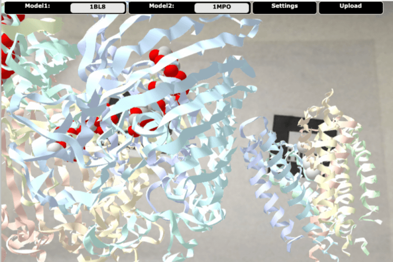
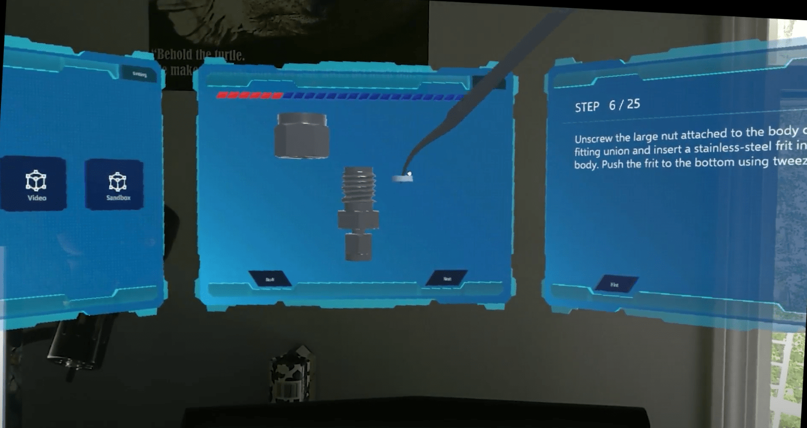

Protein Structure Visualization System Based on WebXR
This is an AR web application designed to visualize the protein Structure in Augmented Reality and help undergraduates have a better understanding of the structure. The structure model can be downloaded directly from the PDB bank through the PDB ID and be loaded to the AR environment by scanning the 2D marker. There are multiple viewing styles for each structure. Two structures can be loaded in the meantime.

Flow Chemistry
As part of our Department of Energy RAPID grant, we developed an augmented reality program to build a flow chemistry set-up. The overall objective of this project was to create an AR program that teaches flow chemistry in an engaging manner that will create excitement about exploring that process. The flow chemistry application uses the HoloLens 2 to project holograms in a laboratory or classroom environment. The HoloLens 2 is a powerful AR device that includes capabilities for hand gestures, spatial mapping, and voice recognition. Although the HoloLens 2 does include other features that may be relevant in future training programs, we focus on voice recognition in our system because hand gestures currently require training to achieve proficiency.

“Wrapped Reality”: A Gesture-controlled VR Game
This is a VR game built in HTC Vive. The Leap Motion controller is utilized to track the player’s hands. Different from the normal VR game, in this game, the player uses the hand gestures to play the game instead of using controllers. In the game, the player acts as a journalist with a special camera. He/She can walk around in the scene, go into the picture of the fake news and find out the truth.
VR Amusement Park
It ia a VR project built in mobile phone and players can use the Google cardboard to play. You can walk around in the park, go on the sky wheel, and go ride the roller coaster. The 3D sound effects are set to enhance the immersive experience.
Audio Reactive Visuals Generator Based On PCG
It is a generator that can “paint” the sound. Different volumes can be depicted in different colors in real time. The red line represents will be generated by a sound with high volume. The blue ones represent the medium volume while green ones represent whispers.